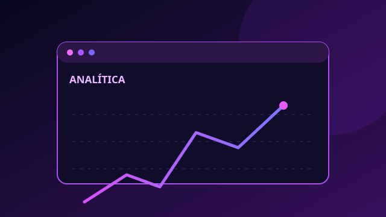
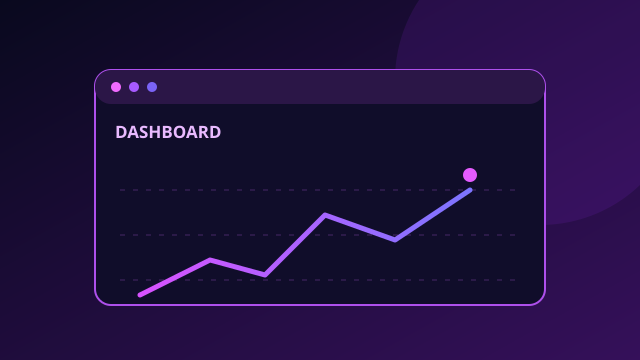
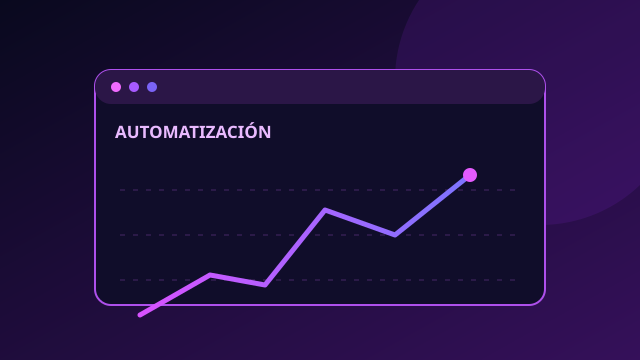

Datos
Galería de Gráficos en R
Visualización interactiva y exploración de técnicas gráficas con R Shiny.
Abrir proyecto ↗Una combinación de proyectos publicados y conceptos visuales que ilustran mis áreas de interés.

Visualización interactiva y exploración de técnicas gráficas con R Shiny.
Abrir proyecto ↗
Concepto de paneles de indicadores, tendencias y reportes interactivos.
Ejemplo conceptual · enlace próximamente
Interfaces responsivas con HTML, CSS y JavaScript.
Ejemplo conceptual · enlace próximamente
Concepto de scripts y flujos para reducir tareas manuales.
Ejemplo conceptual · enlace próximamente